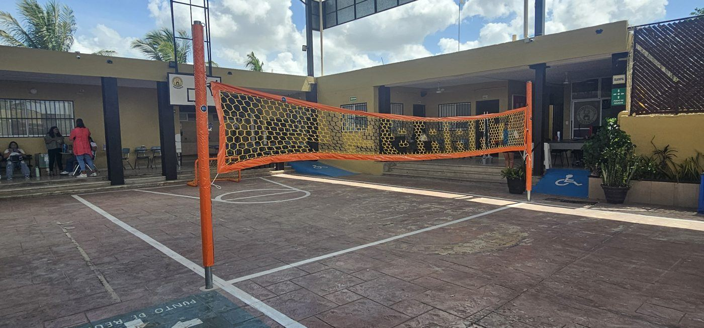
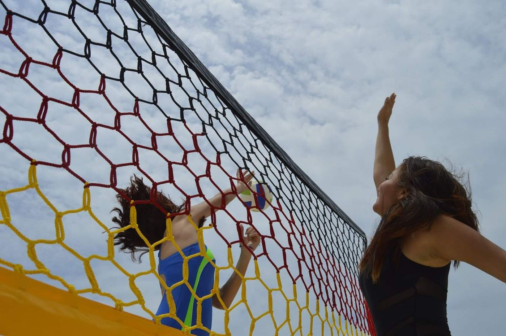
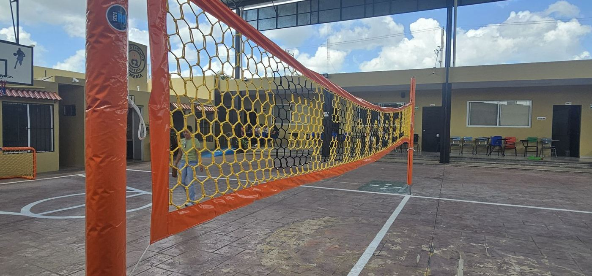

Antes de pintar líneas, comprar postes o pedir una red, conviene tener claras las medidas de la cancha de voleibol y de la red. Aquí están las reglamentarias, según las reglas oficiales de la Federación Internacional de Voleibol (FIVB), y lo que debes tomar en cuenta si la cancha es de escuela o de colonia.
Medidas de la cancha de voleibol
| Elemento | Medida reglamentaria |
|---|---|
| Cancha de juego | 18 m de largo × 9 m de ancho |
| Cada mitad de cancha | 9 × 9 m |
| Zona libre alrededor | Mínimo 3 m por cada lado |
| Línea de ataque | A 3 m de la línea central, en cada lado |
| Ancho de las líneas | 5 cm |
Con la zona libre, el espacio mínimo total es de 24 × 15 m. En canchas de usos múltiples es común que no alcance; en ese caso se juega igual, pero conviene revisar que no haya muros o postes pegados a las líneas.
Altura de la red de voleibol
| Rama | Altura de la red |
|---|---|
| Varonil | 2.43 m |
| Femenil | 2.24 m |
La altura se mide en el centro de la cancha. En categorías infantiles y juveniles cada liga fija su propia altura, así que confírmala con tu liga o tu asociación antes de instalar los postes.
Medidas de la red de voleibol
- Ancho: 1 m.
- Largo: de 9.50 a 10 m.
- Malla reglamentaria: cuadros de 10 cm.
- Banda superior: 7 cm de ancho.
- Antenas: 1.80 m de largo, con 80 cm por encima de la red.

Nuestra red: hexagonal y personalizada
Vale la pena ser claros: la red de competencia oficial es de malla cuadrada. Las redes de voleibol de Grupo RC se tejen a mano en hexágono, en la medida profesional de 9.5 o 10 × 1 m, y se personalizan con el nombre de tu escuela, club o equipo, en tus colores.
Son ideales para escuelas, clubes, canchas de colonia y torneos locales, donde la red también es imagen.

Qué mandarnos para cotizar tu red
- Largo que necesitas: 9.5 o 10 m.
- Texto que quieres tejido (nombre de la escuela o el equipo).
- Colores de la red y de las letras.
- Ciudad de entrega.
Si en tu cancha también salen los balones hacia la calle, revisa nuestra guía de red de contención para canchas.
Fuente de las medidas: Reglas Oficiales de Voleibol de la FIVB.
Preguntas frecuentes
¿Cuánto mide una cancha de voleibol?
La cancha reglamentaria mide 18 m de largo por 9 m de ancho, rodeada por una zona libre de al menos 3 m por cada lado.
¿A qué altura va la red de voleibol?
Según el reglamento oficial de la FIVB, a 2.43 m en la rama varonil y a 2.24 m en la femenil, medida desde el centro de la cancha. En categorías infantiles y juveniles la altura cambia según la liga.
¿Cuánto mide la red de voleibol?
La red reglamentaria mide 1 m de ancho y de 9.50 a 10 m de largo.
¿Las redes de voleibol de Grupo RC son oficiales?
No. La red reglamentaria de la FIVB es de malla cuadrada de 10 cm. Las nuestras se tejen a mano en hexágono, en medida de 9.5 o 10 × 1 m, y se personalizan con letras y colores: están pensadas para escuelas, clubes y canchas recreativas.